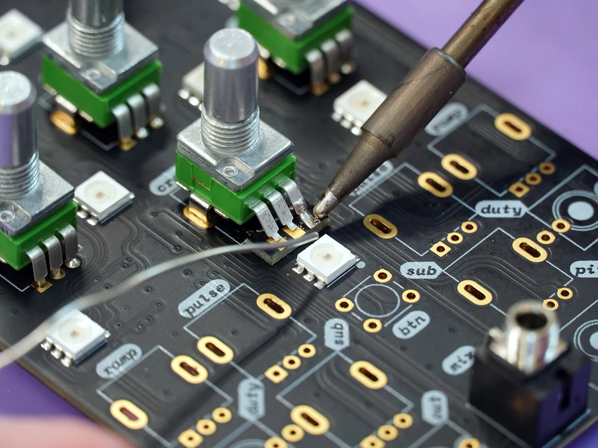

My journey begins my senior year of high school, 2019-2020. I started off my senior year well. I was taking AP Calculus and taking local community college classes in the AE transfer program with NC State. I had good grades, on track to graduate college in fall 2021 and scholarship with the AROTC @ State. I was also sent to The Citadel by the Navy for leadership and future citizen training. Then disaster struck in the form of SARS-CoV-2. We went online and my grades and everything school related went down. I ended up graduating over Zoom with a measly ~3.2 gpa. It was measly in a way that I thought I could no longer receive scholarships and support for school. My first job at the time was family business with my father. It's a log cabin company and I learned alot from him. I spent summer 2020 traveling and working until I started college in the fall. I started out in the Associates in Engineering transfer program with the intention of transferring to State and getting a Computer Engineering Degree. At the time, I was not interested in software development, in fact, I hated it. I couldn’t understand it. I thought it was too hard and I found myself understanding hardware components much easier than I did with software. My first year in college was all online while I worked full time with my father and it went poorly. I ended up dropping 3 out of the 9 classes I took (5 fall semester and 4 spring). I then failed one class and the others were C’s with one B letter grade. It was after my fall semester, that I wanted to switch to Wake Tech and study their Electrical Engineering and transfer over to State with my same intentions in hardware. Once I made my switch and started at Wake in the fall of 2021, it was a night and day difference. My mental was much better than it was during the year 2020 and I started to enjoy going to school, even though I drove an hour 3 days a week just to get there. Once my winter break was over for 2021, I started to look for jobs that could help with my degree. I eventually got an interview with a phone/computer repair shop. The store was just opening and it was a franchise repair shop. I got the job and the store opened up in April 2022. It was at this time that I learned more about hardware components and expanded my soldering skills. The company I worked for was uBreakiFix.My Experience at UBreakiFIx
Starting out in the trenches as a lowly repair technician, I was hired on with three other techs with the same amount of phone repair and customer service experience, which was none. After working there for about 6 months, I was promoted to Lead Tech and the owners of the store paid for some of my training in soldering and leadership courses. All went well and the team that I was hired on with, only one guy was left. The others had left or been fired. We went through two managers and 5 different team members. Eventually the owners wanted to promote me and about 3 months ago, I made it to the Store Manager position after starting out as a tech.
School
Ever since I graduated high school, schooling for me hasn't been great at all. My first semester at Nash Community College was a disaster. I was taking 5 classes and working full time with my father. Not to make any excuses, because me failing in school was my fault and mine alone. I was stubborn and never asked for help, and I still don't ask for help until I have exhausted all of my resources available to me. After ending my first year of college with a 2.5 GPA, I knew I needed to change something. I was accepted into Wake Tech before I had graduated high school, so I knew I could just sign up for classes whenever I wanted to and I did. At the time (Spring 2021) Wake Tech was the only school offering in person classes close to me. I signed up for fall semester and attended in person classes for electrical engineering. I enjoyed it, learning soldering and circuits. We did some very basic Python scripts and that's when I started to explore more scripting and command line. It was very intriguing for myself and it felt like I was in the matrix. After finishing up 2 semesters in the electrical engineering program, I signed up for game development classes, summer of 2022. I didn't do great in those classes, in fact I ended up dropping 2 of my 3 summer classes that I signed up for and I made a C in the one that I stayed in.